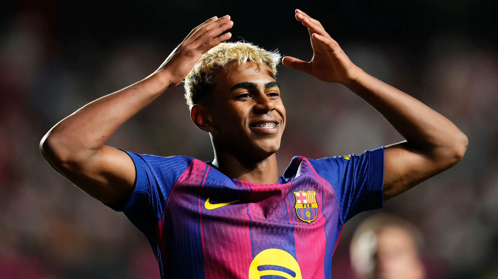
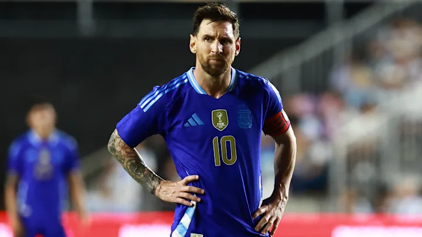
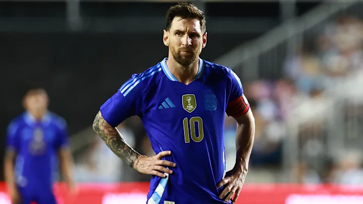

Ian Allard-Neptune
IndexBorn on July 13, 2007, Lamine Yamal is an INCREDIBLE winger of the La Liga club Barcelona and the Spain national team. Initially, he became widely renowned for his incredibly young age while playing at the highest level, but now his skill speaks for himself and his age is only secondary. He already is considered one of (if not the) greatest player ever for his young age of 18, but how does he compare to other greats at his age? And if he continues this pace could he be the next GOAT?
 

While Lamine is far and away statistically much better than either of the other two greats, this approach is way too simplistic and is not conclusive enough to determine whether he will ever eclipse the acolades of either the other two players. However, he has made a crucial first step with this wonderful start to his career.
Experiment with color
Font Selection